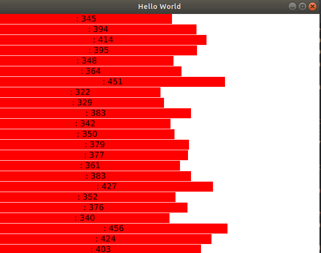

在Qml使用中，会遇到使用Repeater或者ListView之类的东西，如果这些需要展示的数据在c++层面，数据的频繁更新或者数据的惰性更新会需要使用到Model。
与Model对应一起使用的是Delegate，分别代表的是数据原型以及显示方式，这非常符合MVC。(相关概念及使用样例)
在Qml中，更复杂的Model需要有c++ class来书写，本文提供一种方便与c++数据进行交互的方法。
1
2
3
4
5
6
7
8
9
10
11
12
13
14
15
16
17
18
19
20
| class Global : public QObject{
Q_OBJECT
signals:
void widthChanged(int);
};
typedef Singleton<Global> G;
class DataModel : public QAbstractListModel{
Q_OBJECT
public slots:
void widthChanged(int i){ emit dataChanged(createIndex(i,0),createIndex(i,0)); }
public:
explicit DataModel(QObject *parent = Q_NULLPTR);
virtual ~DataModel(){}
enum Roles { WidthRole = Qt::UserRole + 1 };
Q_ENUM(Roles)
QHash<int, QByteArray> roleNames() const ;
virtual int rowCount(const QModelIndex &parent = QModelIndex()) const override;
virtual int columnCount(const QModelIndex &parent = QModelIndex()) const override;
virtual QVariant data(const QModelIndex &index, int role = Qt::DisplayRole) const override;
};
|
以上代码是一个Model的Demo样例，值得注意的是三个重载的函数rowCount、columnCount以及data和一个信号dataChanged，这三个函数是由Qml进行调用，获取Model的行列值以及获取特定位置的值的，而在行列值不变的情况下，需要更新数据只需要触发dataChanged信号即可。若出现了行列值改变的情况，则需要进行重新渲染，流程如下:
1
2
3
4
5
6
| void reload(){
beginResetModel();
...
endResetModel();
this->resetInternalData();
}
|
api函数均可以通过Qt Reference找到，这里就不详细解释了。
完整Demo地址
